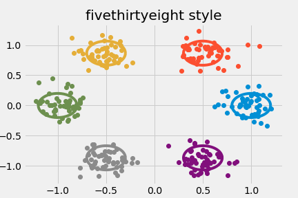
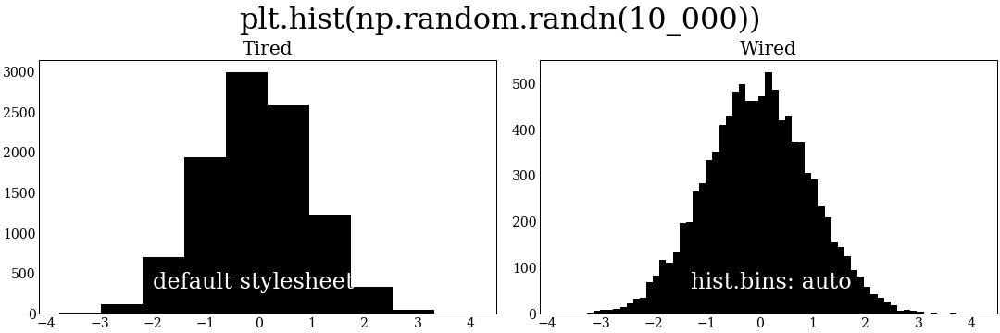
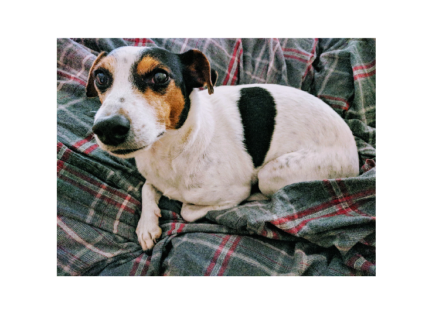
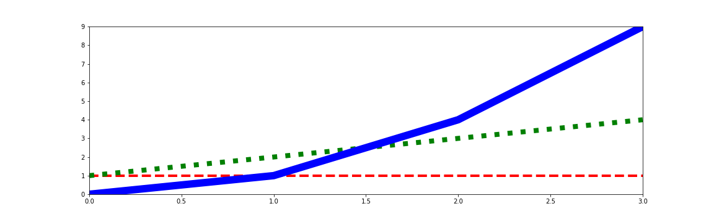
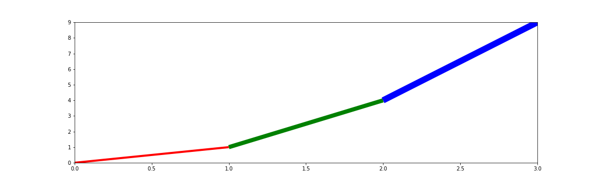
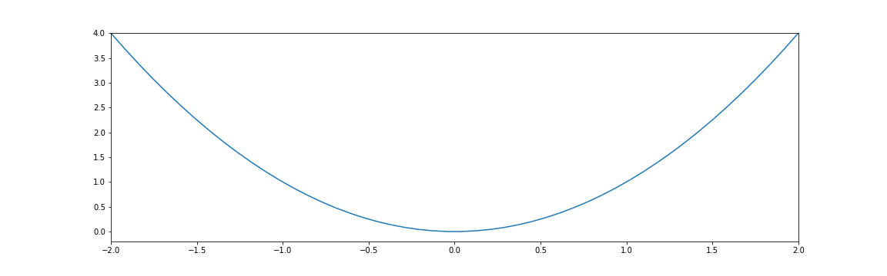
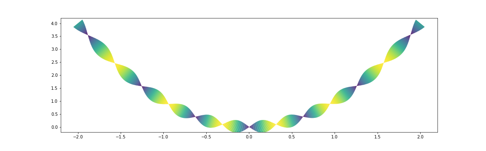

Building a maintainable plotting library
yourplotlib
yourplotlibColin Carroll
@matplotlib

Slides are online!
colcarroll.github.io/yourplotlib
Code is also available here.
Many thanks to the Matplotlib team and contributors.
Your plotting should understand your domain
- ArviZ
- seaborn & plotnine
- DataFrame.plot (pandas)
- DataArray.plot (xarray)
Style sheets
import matplotlib.pyplot as plt
plt.style.use('default')

Style sheets
plt.style.use('classic')

Style sheets
plt.style.use('ggplot')

Style sheets
plt.style.use('fivethirtyeight')

Style sheets
plt.style.use('tufte')

Set a stylish default
import matplotlib.pyplot as plt
plt.plot(*np.random.randn(50, 2))

Set a stylish default
plt.rcParams.update({
"axes.prop_cycle": plt.cycler(
"color",
["#EE9041", "#459DB9", "#667B83"]),
})
plt.plot(*np.random.randn(50, 2))

Set a stylish default
plt.rcParams.update({
"figure.figsize": [10.0, 3.0],
})
plt.plot(*np.random.randn(50, 2))

Set a stylish default
plt.rcParams.update({
"lines.marker": "d",
})
plt.plot(*np.random.randn(50, 2))

Set a stylish default
plt.rcParams.update({
"lines.linestyle": "",
})
plt.plot(*np.random.randn(50, 2))

Set a stylish default
plt.rcParams.update({
"lines.markersize": 48.0,
})
plt.plot(*np.random.randn(50, 2), clip_on=False)

Set a stylish default
plt.rcParams.update({
"axes.spines.bottom": False,
"axes.spines.top": False,
"axes.spines.left": False,
"axes.spines.right": False,
"xtick.major.bottom": False,
"ytick.major.left": False,
})
plt.plot(*np.random.randn(50, 2), clip_on=False)

Set a stylish default
plt.rcParams.update({
"lines.markeredgecolor": "black",
})
plt.plot(*np.random.randn(50, 2), clip_on=False)

Set a stylish default
x = np.linspace(-4, 4)
plt.plot(x, np.cos(x), clip_on=False)
plt.plot(x, np.sin(x), clip_on=False)
plt.plot(x, -np.cos(x), clip_on=False)

Save your styles
Print Configuration:
print(plt.rcParams)
Convert output to RcParams format
font.family: serif
figure.facecolor: #fffff8
axes.facecolor: #fffff8
font.size: 14.0
hist.bins: auto
lines.markersize: 8.0
Save to "my_style.mplstyle"
from pathlib import Path
print(Path(matplotlib.get_configdir()) / "stylelib")
plt.style.use("my_style") # all set!
...You can also pip install styles if you are careful
Be bold.

Wrap Your Plots
def confetti(N, *, ax=None, **kwargs):
if ax is None:
ax = plt.gca()
my_artists = ax.plot(*np.random.randn(N, 2),
clip_on=False, **kwargs)
return my_artists
def solitare(x, *, ax=None, **kwargs):
if ax is None:
ax = plt.gca()
kwargs.setdefault('clip_on', False)
my_artists = ax.plot(x, np.cos(x),
x, np.sin(x),
x, -np.cos(x),
**kwargs)
return my_artists
Use Your New Plotting Methods
_ = confetti(42)
Customize Your Plots
_ = confetti(20, marker='*', markersize=50)
_ = confetti(87, markersize=10)

Compose Your Plots
fig, (ax1,ax2) = plt.subplots(nrows=2)
_ = solitare(np.linspace(-np.pi, np.pi), ax=ax1,
markersize=30, marker='$\infty$')
_ = confetti(13, ax=ax2, marker='>')
Build custom plots with Artists

fig, ax = plt.subplots()
lc = LineCollection(
segments=[
((0, 1), (1, 1), (2, 1), (3, 1)), # flat line
((0, 1), (1, 2), (2, 3), (3, 4)), # straight line
((0, 0), (1, 2), (2, 4), (3, 9)), # parabola
],
)
ax.add_collection(lc)
ax.set_ylim(0, 9)
ax.set_xlim(0, 3)

...
lc = LineCollection(
segments=...,
colors=('red', 'green', 'blue'),
linewidths=(4, 8, 12),
linestyles=('dashed', 'dotted', 'solid')
)
...

...
lc = LineCollection(
segments=[
((0, 0), (1, 2)),
((1, 2), (2, 4)),
((2, 4), (3, 9))
], ...
)
...

Working with LineCollection
x = np.linspace(-2, 2)
y = x ** 2
points = np.vstack((x, y)).T
# array([[-2. , 4. ],
# [-1.91836735, 3.68013328],
# [-1.83673469, 3.37359434],
# [-1.75510204, 3.08038317],...
segments = list(zip(points[:-1], points[1:]))
fig, ax = plt.subplots()
lc = LineCollection(segments=segments)
ax.add_collection(lc)
ax.set_ylim(-0.2, 4)
ax.set_xlim(-2, 2)

linewidths = 30 * np.abs(np.sin(10 * x))
...
lc = LineCollection(
segments=segments,
linewidths=linewidths
)
...

cmap = plt.get_cmap('viridis')
...
lc = LineCollection(
segments=segments,
linewidths=linewidths,
colors=cmap(np.abs(np.sin(5 * x))),
)
...

Light wrappers for your use
def plot_line(x, y, linewidths=None, colors=None, ax=None):
points = np.vstack((x, y)).T
segments = list(zip(points[:-1], points[1:]))
if ax is None:
ax = plt.gca()
lc = LineCollection(
segments=segments,
linewidths=linewidths,
colors=colors,
)
ax.add_collection(lc)
# ...mess with scales...
return lc
x = np.linspace(-2, 2)
y = x ** 2
linewidths = 30 * np.abs(np.sin(10 * x))
colors = plt.get_cmap('viridis')(np.abs(np.sin(5 * x)))
# Our custom function!
plot_line(x, y,
linewidths=linewidths,
colors=colors)

t = np.linspace(0, np.pi * 2.0, 2_000)
cmap = plt.get_cmap('rainbow')
colors = cmap(np.abs(np.cos(t * 1.25)))
plot_line(np.cos(t), np.sin(t), # circle
linewidths=40 * np.cos(1.5 * t), # 3 turns
colors=colors)
ax.axis('off')

Share Your Library
Package like any standard Python package 🙃
We love to help:
discourse.matplotlib.org/c/development/3rdpartyMatplotlib is a Library & an Application
This is a source of... tension
A library wants to help you build tools
An application wants to help you do something
A library should be explicit
An application should "do the right thing"...
...but "the right thing" is very subjective
Build the interface you need
- Write wrappers around Axes methods
- Write your own functions that instantiate Artists
- Write your own Artist classes that reimplement draw
Talk to us!
discourse.matplotlib.org